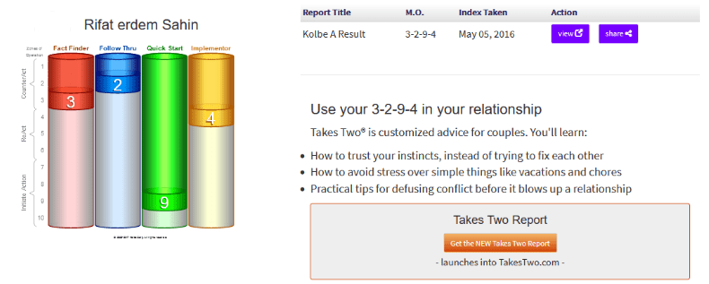

Understanding Conation: Embracing Follow-Through in a Distracted World

In the realm of human psychology, conation is a term that often flies under the radar. While cognition deals with our knowledge and intellect, and affective concerns our emotions and feelings, conation is all about our will, our drive to act, and our perseverance to follow through. It’s the part of us that pushes toward goals and completes tasks despite obstacles.
However, not everyone has the same conative strengths. Some of us get stuck in the weeds, lost in minutiae, and are drawn down rabbit holes. Instead of focusing on completing a task, we might end up arguing, debating, or engaging in endless discussions. While these tendencies can be valuable in certain contexts, they can also hinder our ability to follow through on important projects.
The Challenge of Conative Follow-Through
The inclination to debate and engage deeply rather than follow a process or create one is a common challenge. Let’s break down how these tendencies manifest and explore strategies to harness our conative strengths for better follow-through.
-
Stuck in the Weeds:
-
Symptom: You find yourself fixated on details, often losing sight of the bigger picture. This can lead to analysis paralysis, where decisions are delayed because you’re overthinking every detail.
-
Strategy: Set clear priorities and deadlines. Use tools like time-blocking to allocate specific periods for deep dives into details, but also schedule time to step back and assess progress on a broader scale.
-
Rabbit Holes:
-
Symptom: You start on a task but quickly get diverted into related or unrelated tangents. This often results in a lot of interesting but unproductive activity.
-
Strategy: Practice mindfulness and self-awareness. When you catch yourself straying, gently steer back to the primary task. Techniques like the Pomodoro Technique, which involves working in focused intervals, can help maintain concentration. > Let go of the Cambridge idea > Just use it as a business base and move with your work
-
Arguing and Debating:
-
Symptom: You enjoy the intellectual stimulation of argument and debate, which can be a strength in critical thinking but a weakness in task completion.
-
Strategy: Recognize the appropriate context for debate. In execution phases, commit to decisions and move forward. Save debates for planning and brainstorming sessions, where they can add value without derailing progress.
-
Engagement Over Process:
-
Symptom: You thrive on interaction and engagement, often at the expense of following through on processes and procedures. This can lead to a lot of starting but not much finishing.
-
Strategy: Balance engagement with structured processes. Use collaborative tools that allow for interaction while keeping track of progress, such as project management software (e.g., Trello, Asana) which can provide a visual roadmap to follow.
Adapting Your Approach
Understanding your conative tendencies is the first step toward improving follow-through. Here’s how you can adapt your approach:
-
Self-Assessment: Reflect on past projects. Where did you excel? Where did you get sidetracked? Tools like the Kolbe A™ Index can provide insights into your natural conative strengths and weaknesses.
-
Goal Setting: Define clear, actionable goals. Break tasks into smaller, manageable steps and set milestones to track progress. SMART goals (Specific, Measurable, Achievable, Relevant, Time-bound) are particularly effective.
-
Accountability: Find ways to hold yourself accountable. This could be through regular check-ins with a mentor, peer, or accountability group. Publicly sharing your goals and progress can also add an extra layer of commitment.
-
Environment Design: Create an environment conducive to focus and follow-through. Minimize distractions, set up dedicated workspaces, and establish routines that promote productivity.
-
Flexibility and Adaptability: Recognize that no approach is one-size-fits-all. Be willing to adjust strategies based on what works best for you. Continuously seek feedback and refine your methods.
Conclusion
Conation is a powerful force that drives our ability to act and persevere. By understanding and adapting our conative strengths, we can overcome tendencies that lead us astray and improve our follow-through. Embrace your natural inclinations, but also implement strategies to stay on track. With the right balance, you can achieve your goals and bring your projects to successful completion, even in a world full of distractions.
Imported from rifaterdemsahin.com · 2024